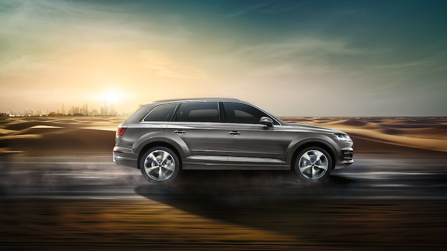

Never stop getting better - that's the idea behind the Audi Q7.
It combines masculinity with lightness. The interior is spacious
and comfortable. The boot also offers even more space for your ideas
- as a five-seater it holds up to 890 litres of pure luggage volume
and is highly variable. Whether for a business trip or a family outing
- the Audi Q7 is always the ideal companion.
The Audi Q7 stands sovereign on the road. A flexibly
shaped Singleframe dominates the front, the daytime running light
draws a striking double-arrow graphic in the headlights. The tailgate
with standard LED combination rear lights surrounds the steep D-pillars.
Inserts with quattro lettering in the door strip attachments structure
the lower area of the vehicle side. The attachments follow a new colour
and material concept. The Audi Q7 is one of the lightest models in its
segment. Thanks to Audi’s strict lightweight construction the base model
still lies under two tonnes empty weight (without driver). The body alone
saves 71 kilograms thanks to the innovative multi-material construction
with many aluminium parts.
Fuel consumption combined *: 7.0-6.5 l/100km
CO₂-emissions combined *: 181-172 g/km

Despite the impressive dimensions and the generous
interior, the driving experience is almost that of a sporty limousine.
The excellent driving comfort is ensured, among other things, by the
precise electro mechanical steering and the weight reduction on the
front and rear axle. The Audi Q7 is relaxed on a fast motorway ride,
agile on winding country roads and thanks to optional all-wheel steering,
it is extremely agile during manoeuvring in confined spaces. Complemented
by the quattro drive, a fast shifting tiptronic and the low overall weight,
a stable driving style is ensured even off the beaten track.
Fuel consumption combined *: 7.0-6.5 l/100km
CO₂-emissions combined *: 181-172 g/km
The interior of the Audi Q7 conveys a feeling of vastness, generosity and
cultivated elegance. The clear architecture and the logical operating concept work
perfectly together – all switches and controllers are ideally at hand. All the
colours and materials of the interior are carefully coordinated. For even more
comfort while driving, the individual contour seats with massage function are
optionally available. The leather upholstery is perforated and the driver and
front passenger seats can be cooled and heated at the touch of a button. The
optional ambient lighting includes illuminated door sills and additional contour
lighting on the centre tunnel console and ensures a pleasant atmosphere in the dark.
In addition, a very low noise level supports the pleasant room feeling.
The operating concept of the Audi Q7 offers extensive high-tech technology:
The MMI all-in-touch control panel with a large touchpad makes operation
intuitively easy. The optionally available Audi virtual Cockpit, a fully digital
instrument cluster with high-resolution 12.3-inch display, can be adjusted to your
personal preferences in no time – either with classic display of speed and rpm as
large round instruments or with progressive, large-screen display of navigation,
radio and media information, for example. The optional head-up display, which
projects the most important displays as well as information from assistance
systems and navigation onto the windscreen directly into the driver's field of
vision, provides increased driving comfort. The thermal imaging camera of the
night vision assistant increases driving safety in the dark – it points out
persons and larger wild animals that are detected directly in the Audi virtual
cockpit and in the head-up display. A pleasant entertainment experience is
provided by the optionally available Bang & Olufsen sound system with 3D sound
and Audi tablets as mobile rear seat entertainment for the fund passengers.